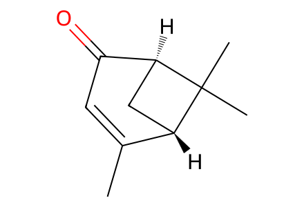
CC1=CC(=O)[C@@H]2C[C@@H]1C2(C)CAll experimentally reported main-route, oxygen/nitrogen diversification and photodimerization products, plus unsuccessful dehydration product mixtures. Known three-step preparations of 27/32 and formal routes to 17/35 are explicitly unresolved literature boundaries; no invented intermediate structures. Facts compiled deterministically; independent review pending.
完整 JSON · 逐步 CSV · 路线序列 · SDF · HRMS 核对
| 事件 | 分子连接 | 报告产率 | Canonical reaction SMILES |
|---|---|---|---|
| A01 | 27 → 28 | 28: 65% | C=C[C@]1(C)CC2(CC[C@H]1C(=C)C)OCCO2>>C=C[C@]1(C)CC2(CC[C@H]1C(C)=O)OCCO2 |
| A02 | 28 + allylMgBr → 20 | 20: 86% | C=C[C@]1(C)CC2(CC[C@H]1C(C)=O)OCCO2.C=C[CH2][Mg][Br]>>C=CCC(C)(O)[C@@H]1CCC2(C[C@@]1(C)C=C)OCCO2 |
| A03 | 20 → 29 | 29: 99% | C=CCC(C)(O)[C@@H]1CCC2(C[C@@]1(C)C=C)OCCO2>>CC1(O)CC=C[C@]2(C)CC3(CC[C@@H]12)OCCO3 |
| A04 | 29 → 19 | 19: 72% | CC1(O)CC=C[C@]2(C)CC3(CC[C@@H]12)OCCO3>>CC1(O)CCC[C@]2(C)CC3(CC[C@@H]12)OCCO3 |
| E01 | 32 → 23 | 23: 72% | C=CCC[C@]1(C)CC2(CC[C@H]1C(=C)C)OCCO2>>C=CCC[C@]1(C)CC2(CC[C@H]1C(=C)CO)OCCO2 |
| E02 | 23 → 33 | 33: 98% | C=CCC[C@]1(C)CC2(CC[C@H]1C(=C)CO)OCCO2>>C[C@]12CCC=C(CO)[C@@H]1CCC1(C2)OCCO1 |
| E03 | 33 → 34 | 34: 94% | C[C@]12CCC=C(CO)[C@@H]1CCC1(C2)OCCO1>>C[C@]12CCC[C@H](CO)[C@@H]1CCC1(C2)OCCO1 |
| E04 | 34 → 22 | 22: 85% | C[C@]12CCC[C@H](CO)[C@@H]1CCC1(C2)OCCO1>>Cc1ccc(S(=O)(=O)OC[C@H]2CCC[C@]3(C)CC4(CC[C@@H]23)OCCO4)cc1 |
| E05 | 22 → 30 | 30: 98% | Cc1ccc(S(=O)(=O)OC[C@H]2CCC[C@]3(C)CC4(CC[C@@H]23)OCCO4)cc1>>C=C1CCC[C@]2(C)CC3(CC[C@@H]12)OCCO3 |
| E06 | 30 → 18 | 18: 100% | C=C1CCC[C@]2(C)CC3(CC[C@@H]12)OCCO3>>C=C1CCC[C@]2(C)CC(=O)CC[C@@H]12 |
| E07 | 18 + methyl pyruvate → 2 | 2: 72% | C=C1CCC[C@]2(C)CC(=O)CC[C@@H]12.COC(=O)C(C)=O>>C=C1CCC[C@]2(C)C=C3OC(=O)C(C)=C3C[C@@H]12 |
| E08 | 18 + dimethoxyacetone → 3 | 3: 61% | C=C1CCC[C@]2(C)CC(=O)CC[C@@H]12.COCC(=O)COC>>C=C1CCC[C@]2(C)C[C@@H]3OC(=O)C(C)=C3C[C@@H]12 |
| E09 | 3 → 1 | 1: 78% | C=C1CCC[C@]2(C)C[C@@H]3OC(=O)C(C)=C3C[C@@H]12>>C=C1CCC[C@]2(C)Cc3occ(C)c3C[C@@H]12 |
| D01 | 2 + water → 4 | 4: 73% | C=C1CCC[C@]2(C)C=C3OC(=O)C(C)=C3C[C@@H]12.O>>C=C1CCC[C@]2(C)C[C@]3(O)OC(=O)C(C)=C3C[C@@H]12 |
| D02 | 2 + methanol → 7 | 7: 75% | C=C1CCC[C@]2(C)C=C3OC(=O)C(C)=C3C[C@@H]12.CO>>C=C1CCC[C@]2(C)C[C@]3(OC)OC(=O)C(C)=C3C[C@@H]12 |
| D03 | 2 + ammonia → 8 | 8: 84% | C=C1CCC[C@]2(C)C=C3OC(=O)C(C)=C3C[C@@H]12.N>>C=C1CCC[C@]2(C)C=C3NC(=O)C(C)=C3C[C@@H]12 |
| D04 | 2 + ammonia → 8 + 9 | 8: 30%; 9: 56% | C=C1CCC[C@]2(C)C=C3OC(=O)C(C)=C3C[C@@H]12.N>>C=C1CCC[C@]2(C)C=C3NC(=O)C(C)=C3C[C@@H]12.C=C1CCC[C@]2(C)C[C@]3(O)NC(=O)C(C)=C3C[C@@H]12 |
| D05 | 2 + ethylamine → 10 | 10: 95% | C=C1CCC[C@]2(C)C=C3OC(=O)C(C)=C3C[C@@H]12.CCN>>C=C1CCC[C@]2(C)C=C3C(=C(C)C(=O)N3CC)C[C@@H]12 |
| D06 | 2 + ethanolamine → 11 | 11: 86% | C=C1CCC[C@]2(C)C=C3OC(=O)C(C)=C3C[C@@H]12.NCCO>>C=C1CCC[C@]2(C)C=C3C(=C(C)C(=O)N3CCO)C[C@@H]12 |
| D07 | 2 + GABA → 12 | 12: 77% | C=C1CCC[C@]2(C)C=C3OC(=O)C(C)=C3C[C@@H]12.NCCCC(=O)O>>C=C1CCC[C@]2(C)C=C3C(=C(C)C(=O)N3CCCC(=O)O)C[C@@H]12 |
| D08 | 2 + phenethylamine → 13 | 13: 93% | C=C1CCC[C@]2(C)C=C3OC(=O)C(C)=C3C[C@@H]12.NCCc1ccccc1>>C=C1CCC[C@]2(C)C=C3C(=C(C)C(=O)N3CCc3ccccc3)C[C@@H]12 |
| D09 | 2 + tyramine → 14 | 14: 92% | C=C1CCC[C@]2(C)C=C3OC(=O)C(C)=C3C[C@@H]12.NCCc1ccc(O)cc1>>C=C1CCC[C@]2(C)C=C3C(=C(C)C(=O)N3CCc3ccc(O)cc3)C[C@@H]12 |
| D10 | 2 + tryptamine → 15 | 15: 87% | C=C1CCC[C@]2(C)C=C3OC(=O)C(C)=C3C[C@@H]12.NCCc1c[nH]c2ccccc12>>C=C1CCC[C@]2(C)C=C3C(=C(C)C(=O)N3CCc3c[nH]c4ccccc34)C[C@@H]12 |
| D11 | 3 → 5 | 5: 71% | C=C1CCC[C@]2(C)C[C@@H]3OC(=O)C(C)=C3C[C@@H]12>>CC1=C2C[C@@H]3[C@](C)(CCC[C@]3(O)CO)C[C@@H]2OC1=O |
| D12 | 4 → 6 | 6: 78% | C=C1CCC[C@]2(C)C[C@]3(O)OC(=O)C(C)=C3C[C@@H]12>>C=C1[C@H](O)CC[C@]2(C)C[C@]3(O)OC(=O)C(C)=C3C[C@@H]12 |
| D13 | 2 → 16 | 16: 63% | C=C1CCC[C@]2(C)C=C3OC(=O)C(C)=C3C[C@@H]12>>C=C1CCC[C@@]2(C)[C@H]1CC1=C(C)C(=O)O[C@@]13[C@H]2[C@H]1[C@@]2(C)CCCC(=C)[C@@H]2CC2=C(C)C(=O)O[C@]213 |
| A05A | 19 → 30 + 31 | 83% combined mixture yield | CC1(O)CCC[C@]2(C)CC3(CC[C@@H]12)OCCO3>>C=C1CCC[C@]2(C)CC3(CC[C@@H]12)OCCO3.CC1=CCC[C@]2(C)CC3(CC[C@@H]12)OCCO3 |
| A05B | 19 → 30 + 31 | 98% combined mixture yield | CC1(O)CCC[C@]2(C)CC3(CC[C@@H]12)OCCO3>>C=C1CCC[C@]2(C)CC3(CC[C@@H]12)OCCO3.CC1=CCC[C@]2(C)CC3(CC[C@@H]12)OCCO3 |
| A05C | 19 → 30 + 31 | 79% combined mixture yield | CC1(O)CCC[C@]2(C)CC3(CC[C@@H]12)OCCO3>>C=C1CCC[C@]2(C)CC3(CC[C@@H]12)OCCO3.CC1=CCC[C@]2(C)CC3(CC[C@@H]12)OCCO3 |

CC1=CC(=O)[C@@H]2C[C@@H]1C2(C)C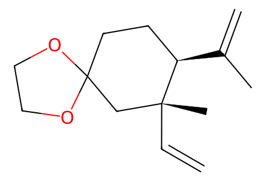
C=C[C@]1(C)CC2(CC[C@H]1C(=C)C)OCCO2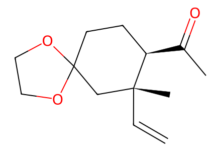
C=C[C@]1(C)CC2(CC[C@H]1C(C)=O)OCCO2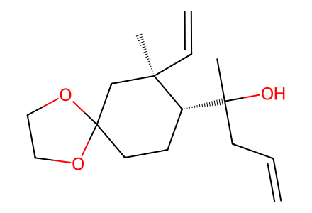
C=CCC(C)(O)[C@@H]1CCC2(C[C@@]1(C)C=C)OCCO2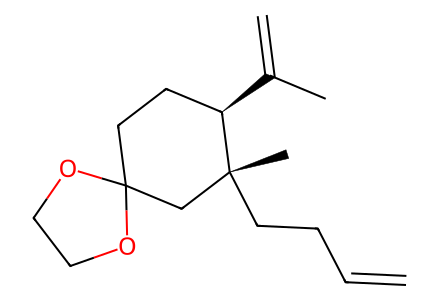
C=CCC[C@]1(C)CC2(CC[C@H]1C(=C)C)OCCO2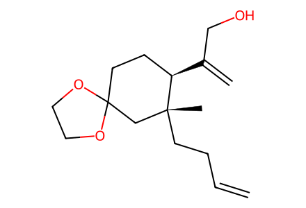
C=CCC[C@]1(C)CC2(CC[C@H]1C(=C)CO)OCCO2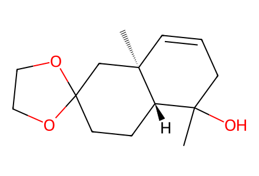
CC1(O)CC=C[C@]2(C)CC3(CC[C@@H]12)OCCO3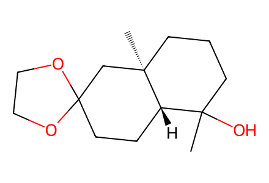
CC1(O)CCC[C@]2(C)CC3(CC[C@@H]12)OCCO3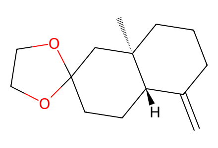
C=C1CCC[C@]2(C)CC3(CC[C@@H]12)OCCO3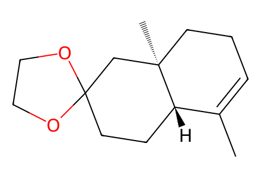
CC1=CCC[C@]2(C)CC3(CC[C@@H]12)OCCO3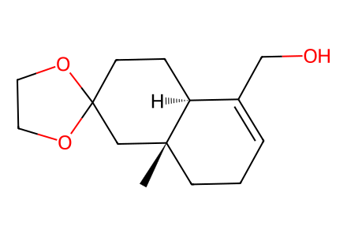
C[C@]12CCC=C(CO)[C@@H]1CCC1(C2)OCCO1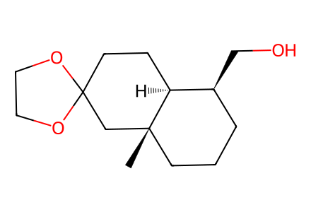
C[C@]12CCC[C@H](CO)[C@@H]1CCC1(C2)OCCO1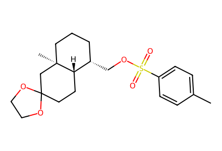
Cc1ccc(S(=O)(=O)OC[C@H]2CCC[C@]3(C)CC4(CC[C@@H]23)OCCO4)cc1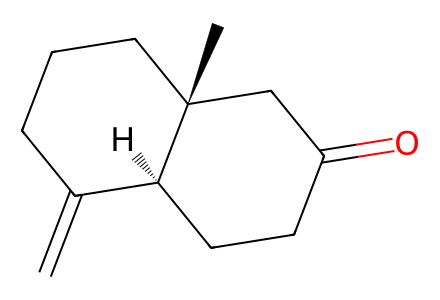
C=C1CCC[C@]2(C)CC(=O)CC[C@@H]12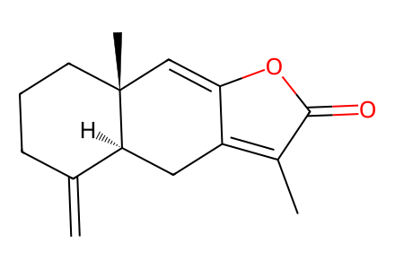
C=C1CCC[C@]2(C)C=C3OC(=O)C(C)=C3C[C@@H]12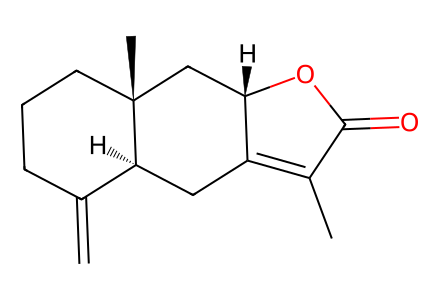
C=C1CCC[C@]2(C)C[C@@H]3OC(=O)C(C)=C3C[C@@H]12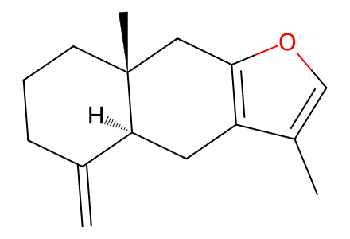
C=C1CCC[C@]2(C)Cc3occ(C)c3C[C@@H]12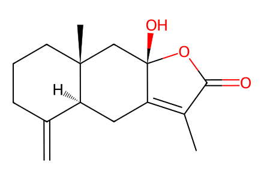
C=C1CCC[C@]2(C)C[C@]3(O)OC(=O)C(C)=C3C[C@@H]12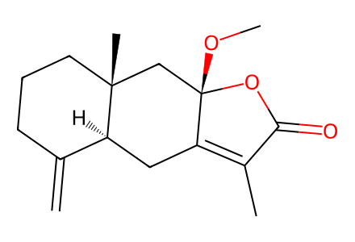
C=C1CCC[C@]2(C)C[C@]3(OC)OC(=O)C(C)=C3C[C@@H]12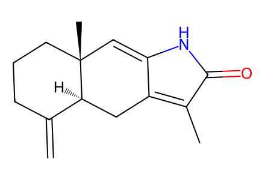
C=C1CCC[C@]2(C)C=C3NC(=O)C(C)=C3C[C@@H]12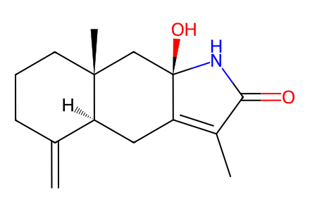
C=C1CCC[C@]2(C)C[C@]3(O)NC(=O)C(C)=C3C[C@@H]12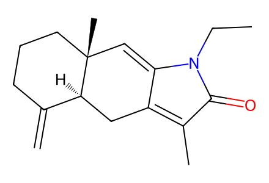
C=C1CCC[C@]2(C)C=C3C(=C(C)C(=O)N3CC)C[C@@H]12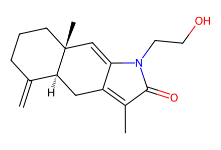
C=C1CCC[C@]2(C)C=C3C(=C(C)C(=O)N3CCO)C[C@@H]12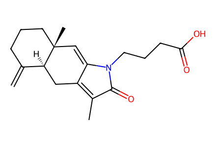
C=C1CCC[C@]2(C)C=C3C(=C(C)C(=O)N3CCCC(=O)O)C[C@@H]12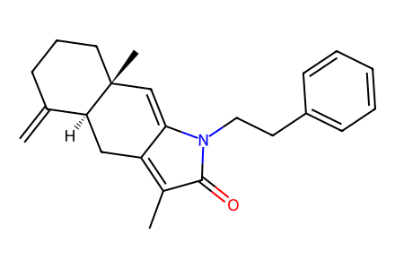
C=C1CCC[C@]2(C)C=C3C(=C(C)C(=O)N3CCc3ccccc3)C[C@@H]12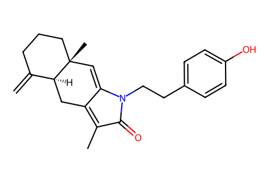
C=C1CCC[C@]2(C)C=C3C(=C(C)C(=O)N3CCc3ccc(O)cc3)C[C@@H]12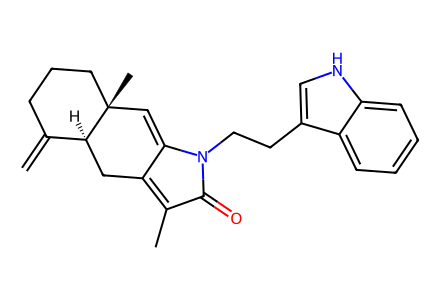
C=C1CCC[C@]2(C)C=C3C(=C(C)C(=O)N3CCc3c[nH]c4ccccc34)C[C@@H]12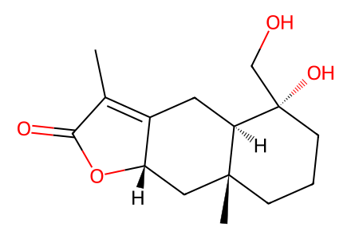
CC1=C2C[C@@H]3[C@](C)(CCC[C@]3(O)CO)C[C@@H]2OC1=O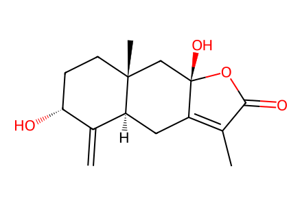
C=C1[C@H](O)CC[C@]2(C)C[C@]3(O)OC(=O)C(C)=C3C[C@@H]12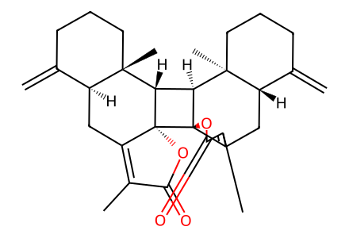
C=C1CCC[C@@]2(C)[C@H]1CC1=C(C)C(=O)O[C@@]13[C@H]2[C@H]1[C@@]2(C)CCCC(=C)[C@@H]2CC2=C(C)C(=O)O[C@]213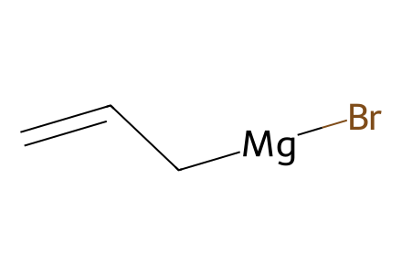
C=C[CH2][Mg][Br]
COC(=O)C(C)=O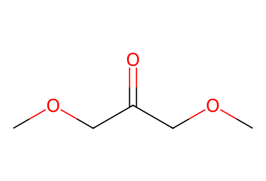
COCC(=O)COC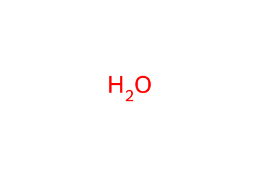
O
CO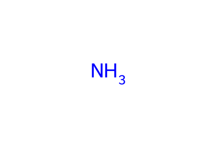
N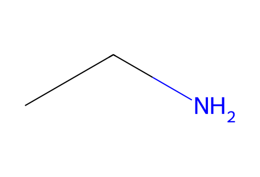
CCN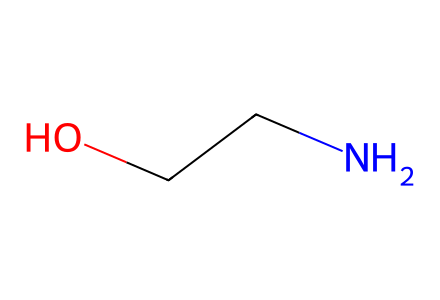
NCCO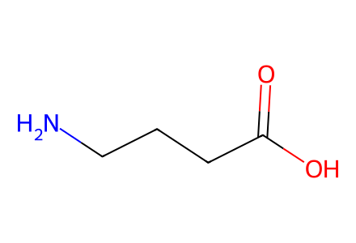
NCCCC(=O)O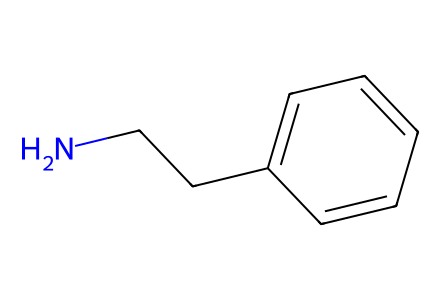
NCCc1ccccc1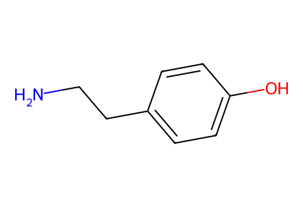
NCCc1ccc(O)cc1
NCCc1c[nH]c2ccccc12